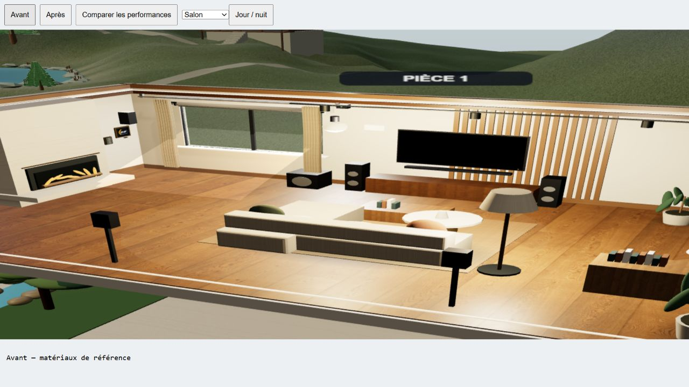
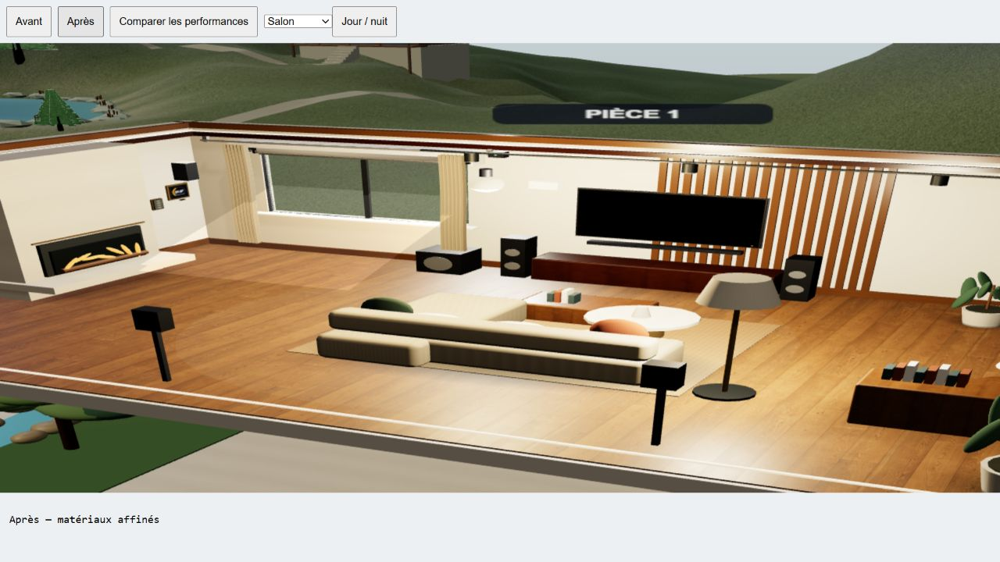

Même cadrage, même éclairage à 70 %, même scène de jour. Compare les arêtes, le bois et les ombres au sol.


Petits chanfreins sur le mobilier et galbes renforcés des assises.
Noyer plus profond, chêne chaud, tissus et touches de terre cuite.
Meubles mieux ancrés au sol, ombrage précalculé au chargement.